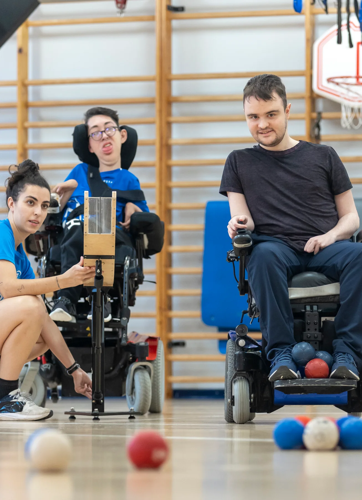
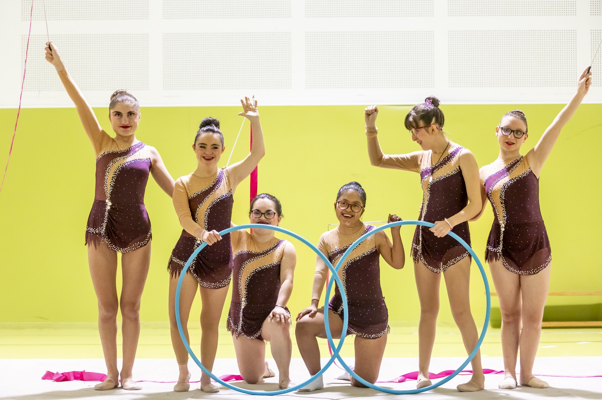
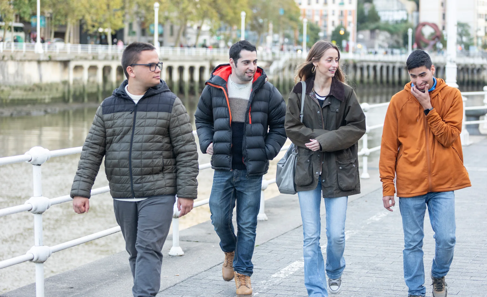
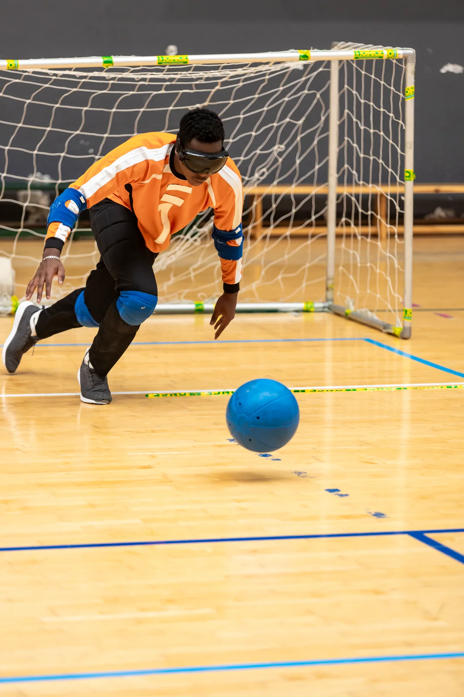
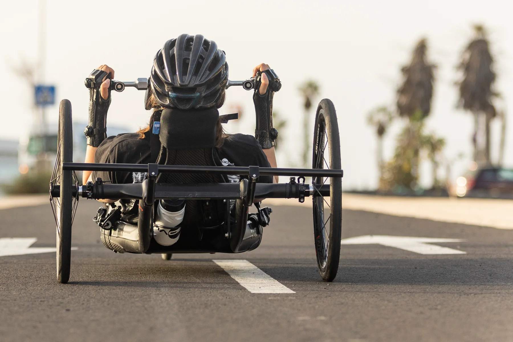
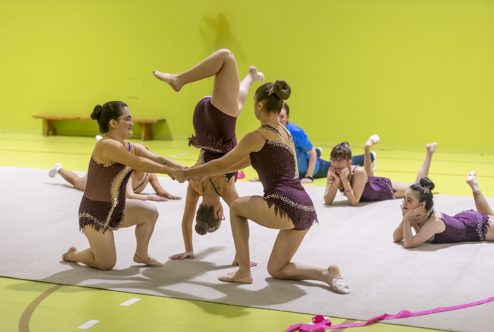
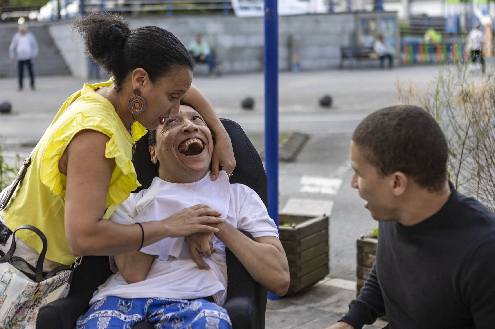

01 / BOCCIA
Precisión y equipo
La concentración, la estrategia y el trabajo compartido durante el juego.
Cada persona tiene sus propias capacidades, habilidades e intereses. Las imágenes con las que contamos el mundo deberían reflejar esa diversidad.

Las fotografías aparecen en webs, publicidad, materiales educativos y presentaciones. Si muestran a personas diversas trabajando, aprendiendo o disfrutando de su tiempo, ayudan a que más gente se reconozca en ellas.
Queremos crear imágenes naturales, con las personas como protagonistas de sus propias historias. Cada participante tiene su personalidad, sus intereses y su manera de vivir.

Las escenas se deciden con las personas participantes y la entidad. Estas fotografías muestran algunas de las historias que podemos contar juntos.

La concentración, la estrategia y el trabajo compartido durante el juego.

El movimiento, los gestos y la intensidad de un partido.

Entrenar, explorar y vivir el deporte de distintas maneras.

Creatividad, coordinación y confianza compartida.
Soy Juan Aizpuru, fotógrafo y creador de vídeo. Me gustaría colaborar con entidades y personas con discapacidad para producir imágenes de stock que muestren experiencias diversas con naturalidad.
Hablamos primero de vuestras actividades, de lo que os gustaría mostrar y de las necesidades de apoyo o accesibilidad. Acordamos juntos el lugar, la duración y las escenas.

Conocemos a la entidad, sus actividades y lo que las personas participantes quieren contar.
Adaptamos el espacio, la comunicación, los apoyos, el ritmo y las pausas a las necesidades de cada persona.
Fotografiamos o grabamos las escenas acordadas, con respeto a las preferencias y los límites de cada participante.
Selecciono y edito el material y entrego la selección acordada para la comunicación de la entidad.
Las imágenes seleccionadas pueden distribuirse en bancos de stock. Allí, empresas y profesionales adquieren licencias para utilizarlas en sus proyectos.
Por ejemplo, pueden aparecer en páginas web, anuncios, materiales educativos o presentaciones. Una imagen puede obtener varias licencias y el uso concreto depende de las condiciones de cada plataforma.
No. La sesión planteada como colaboración no tiene coste para la entidad. Antes de hacerla acordamos qué material se entregará y sus condiciones de uso.
Las imágenes pueden ofrecerse en plataformas que conceden licencias a terceros. Podrían utilizarse en distintos proyectos de comunicación, de acuerdo con las autorizaciones y las condiciones de la plataforma.
La participación es voluntaria. Explicaremos la propuesta y escucharemos las preferencias de cada persona; cuando corresponda, se contará con los apoyos y representantes que procedan.
Sí, la finalidad es que la entidad disponga de una selección para comunicar su actividad. Los usos permitidos, la cantidad de archivos y los plazos se concretarán antes de la sesión.
En stock una imagen puede licenciarse a distintos compradores. Las condiciones y límites se explicarán antes de firmar; no se debe dar por hecho que se aprobará cada uso por separado.
De acuerdo con las personas participantes: podemos hablar de accesibilidad del lugar, apoyos, formas de comunicación, horarios, pausas y cualquier otra necesidad relevante.
Me encantará conocer vuestra actividad y escuchar vuestras ideas para una sesión.
Escribir a Juan ↗